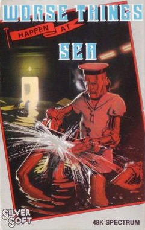
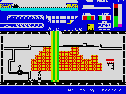
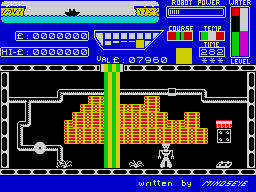

Worse Things Happen at Sea


{kind=link}

| Publisher: | Silversoft |
| Price: | £5.95 |
| Year: | 1984 |
| Source: | CRASH, Issue 6 |

It’s hard to believe, looking at this latest Silversoft game, that worse things could possibly happen at sea, but perhaps the author was referring to R & R’s Titanic when he thought up the title, or perhaps he was thinking about White Star’s Titanic — that wasn’t a game!
Here you are called upon to safely take a cargo ship from port to port. A diagram at the top of the screen shows the ports and your ship with a navigable distance that would take a few moments freestyle to complete for the poorest of swimmers. Judging the difficulties you are about to face from this innocent little diagrammatic representation would be foolish in the extreme!

but what did we see?...
You play the part of a robot (it’s an automated ship this one), and one can only suppose that the authorities allow the ship to leave port with its seaworthiness certificate signed because it only carries a crew of one, and a robot to boot. Boots, however, are of little use — throat length waders would be more appropriate, because this ship starts sinking the second it leaves port!
The ship consists of 11 areas, six on the top deck and five below. Each area is sealed off from the next by hatches, and hatches in the floor of the top deck access to lifts to take you down below. The top right-hand area contains a materialisation machine, from which your robot starts life, and next to it, a recharge chamber for restoring the robot’s power which is drained by work. The other rooms contain nefarious bits of equipment, but it is the pipe and pumping handles that are important. A patch is also supplied in each area, but only six pump handles for the 11 pumps.

The sad state of the ship can be immediately seen on the lower deck where numerous leaks are letting the sea gush in. The rising level of water is shown by the normally white background turning black. The robot has several tasks which include opening and shutting hatches (green or red lights show above the hatch on either side, indicating whether it is open or closed), picking up patches and placing them over leaks and then pumping out the water in the particular room. Of course, you can only carry one thing at a time. Hatches should be left closed as this slows down the rate of flooding between sections, and indeed, it isn’t possible to pump out a section if all the doors are open, as the water flows in too fast for the pump to cope.
The screen display is very busy. About two-thirds is taken up with the depiction of a room. Moving through a hatch results in the display scrolling across to be replaced by the next room entered. Above this is the score and hi-score (shown in £), a diagram of the 11 rooms with the one you are in flashing (also the effect of rising water), a yellow square which indicates what object you are carrying, a bar code showing robot energy, a course indicator (the robot has to keep the boat on course as well!) and gauges for temperature, water level and cargo value. As the water rises, so the cargo value sinks.
Docking successfully at port results in your cargo remaining being evaluated for points. Lives are lost by running out of power, although to help a rapid return to the recharge chamber you can hyperspace, but this might take more energy than is left. Also, the robot short circuits if he’s operating under water, and this drains power faster. Should the ship sink, you at least have the satisfaction of watching the event on the screen at the very top.
CRITICISM
‘This is a super-original game from Silversoft. The graphics and detail are very good and the game is very playable and addictive. I really enjoyed it and I’m sure this game will be a huge success. It’s probably one of the most original games of 84 so far. There are many features in the game to make it varied enough to give it lasting appeal — excellent!’
‘I am amazed that such a simple idea — using a trusty robot to plug holes in a leaky old ship and keep it afloat — should prove to be so much fun to play. The side view of the ship is extremely pleasing graphically and well detailed and coloured. I found that after completing a few successful crossings that worse things began to happen at sea. For instance the ship kept going off course, the engine overheated due to lack of oil, and more holes appeared in different places. Several great tunes are played, and the sound during the game is good. Silversoft have produced an incredibly addictive, playable and attractive game.’
‘There are some games you come across that, based on a simple idea, are nevertheless completely compelling — this is one. Worse Things Happen At Sea is a nightmare of activity. At first it all seems fruitless, as though you can never keep the ship afloat, but as you get better it seems easier. Unfortunately, the game has been programmed to grow with you! Oiling engines and steering wheels are added to the already Herculean tasks of pumping and patching. The graphics are really very good, crisp drawing and good colouring. A massive choice of keys is offered and the keyboard is very responsive too. All in all an excellent, original game. Great instructions on screen too.’
COMMENTS
| Control keys: | Q/W left/right, E/R up/down, T = door/take, X = pump/power. There are five other combinations offered including cursors and Sinclair |
| Joystick: | Kempston, Cursor types, ZX 2 |
| Keyboard play: | Excellent responses |
| Use of colour: | Very good |
| Graphics: | Very good, plenty of detail and nice touches |
| Sound: | Great tunes, very good throughout |
| Skill levels: | Progressive difficulty |
| Lives: | 3 |
| Screens: | 11 |
| Originality: | Very high based on concept and playability |
| General rating: | Addictive, playable, generally excellent. |
| Use of computer: | 88% |
| Graphics: | 89% |
| Playability: | 92% |
| Getting started: | 86% |
| Addictive qualities: | 94% |
| Originality: | 95% |
| Value for money: | 93% |
| Overall: | 91% |